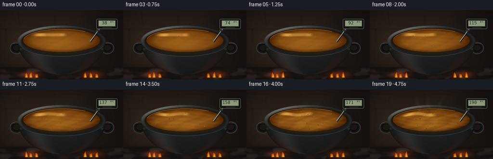
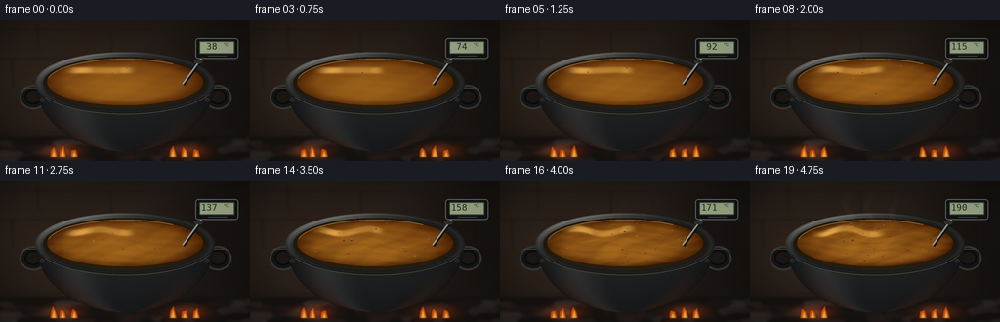

CODING AGENTS AS PIXEL WORLD MODELS
traex/GPT-6.1-Sol · phygen_110
点击播放 · 原生 RGB 像素
逐轮保存的候选
回放视频、检查图与代码变化。
每份候选均可单独播放。实际图片检查记录在下方工具轨迹中。
候选 01播放与检查图
点击播放 · 原生 RGB 像素

展开代码变化
--- 上一保存版本
+++ 本次保存版本
@@ -0,0 +1,216 @@
+from pathlib import Path
+import math
+import numpy as np
+from PIL import Image, ImageDraw, ImageFilter, ImageFont
+import artifact_io
+
+
+ROOT = Path(__file__).resolve().parent
+S = 3
+W, H = 256 * S, 144 * S
+rng = np.random.default_rng(110)
+Y, X = np.mgrid[0:H, 0:W].astype(np.float32) / S
+grain = rng.normal(0, 1, (H, W)).astype(np.float32)
+
+
+def image(a):
+ return Image.fromarray(np.clip(a, 0, 255).astype(np.uint8), 'RGB')
+
+
+def ellipse(draw, box, fill, outline=None, width=1):
+ draw.ellipse(tuple(int(v*S) for v in box), fill=fill, outline=outline, width=int(width*S))
+
+
+def line(draw, pts, fill, width=1):
+ draw.line([(int(x*S), int(y*S)) for x,y in pts], fill=fill, width=max(1,round(width*S)))
+
+
+# A dim, shallow-focus hearth: stone behind, charcoal and ash below.
+bg = np.zeros((H, W, 3), np.float32)
+warm = np.exp(-((X-81)/115)**2-((Y-67)/82)**2)
+for c, (base, add) in enumerate([(21,28), (18,19), (16,12)]):
+ bg[:,:,c] = base + add*warm + grain*1.3
+bg += (np.sin(X*.045 + np.sin(Y*.045))*1.5)[:,:,None]
+bg = image(bg)
+d = ImageDraw.Draw(bg)
+for y in [9, 39, 114]:
+ line(d, [(0,y),(256,y+1)], (24,22,20), 1.3)
+for x,y in [(38,0),(187,0),(113,10),(234,40),(12,40)]:
+ line(d, [(x,y),(x+1,y+29)], (26,23,20), 1.2)
+d.rectangle((0,118*S,W,H), fill=(21,18,16))
+for j in range(52):
+ x,y = rng.uniform(-10,264),rng.uniform(123,148)
+ rx,ry=rng.uniform(5,16),rng.uniform(2,5)
+ v=int(rng.uniform(15,39))
+ ellipse(d,(x-rx,y-ry,x+rx,y+ry),(v+5,v,v-2))
+ if j%3==0:
+ line(d,[(x-rx*.5,y),(x+rx*.4,y-1)],(108,40,14),.65)
+bg=bg.filter(ImageFilter.GaussianBlur(1.3*S))
+bg_array=np.asarray(bg).astype(np.float32)
+
+# Stable, finely pitted cast iron. The rounded belly is lit from the left.
+q=np.clip((Y-65)/69,0,1)
+radius=91*np.sqrt(np.maximum(0,1-q*q))
+body_mask=(Y>=64)&(Y<=134)&(np.abs(X-128)<=radius)
+nx=(X-128)/np.maximum(radius,1)
+nz=np.sqrt(np.maximum(0,1-nx*nx))
+left=np.exp(-((nx+.61)/.24)**2)
+edge_heat=np.maximum(0,q-.32)*np.exp(-((np.abs(nx)-.86)/.22)**2)
+body=np.zeros((H,W,3),np.float32)
+body[:,:,0]=18+18*nz+20*left+54*edge_heat
+body[:,:,1]=20+18*nz+20*left+18*edge_heat
+body[:,:,2]=21+19*nz+19*left+5*edge_heat
+body+=grain[:,:,None]*2.4
+body+=np.sin(X*2.6+Y*1.2)[:,:,None]*.6
+body*= (1-.35*q)[:,:,None]
+rim_r=np.sqrt(((X-128)/92)**2+((Y-64)/32)**2)
+inner_r=np.sqrt(((X-128)/84)**2+((Y-64)/27)**2)
+rim_mask=(rim_r<=1)&(inner_r>=1)
+phi=np.arctan2((Y-64)/32,(X-128)/92)
+rim=np.zeros((H,W,3),np.float32)
+rimlight=(.5+.5*np.cos(phi+2.25))**6
+ridge=np.exp(-((rim_r-.96)/.025)**2)
+for c,(b,l) in enumerate([(28,62),(29,61),(28,58)]):
+ rim[:,:,c]=b+l*rimlight+ridge*(11+18*rimlight)+grain*2
+oilmask=((X-128)/80)**2+((Y-63)/24)**2<=1
+u=(X-128)/80
+v=(Y-63)/24
+oilrad=u*u+v*v
+
+# Repeatable locations for small residual-moisture / dissolved-gas bubbles.
+bubbles=[]
+for j in range(70):
+ a=rng.uniform(0,math.tau)
+ r=np.sqrt(rng.uniform(.06,.88))
+ bubbles.append((math.cos(a)*r,math.sin(a)*r,rng.uniform(0,1),rng.uniform(.3,1.05)))
+
+font=ImageFont.truetype('/usr/share/fonts/truetype/dejavu/DejaVuSansMono.ttf',9*S)
+small=ImageFont.truetype('/usr/share/fonts/truetype/dejavu/DejaVuSans.ttf',4*S)
+
+
+def render(i):
+ t=i/19
+ temp=round(38+152*t**.78)
+ activity=np.clip((temp-78)/112,0,1)
+ arr=bg_array.copy()
+ # Hot embers and a flickering flame on either side of the kettle.
+ for cx in [57,72,185,201]:
+ f=.7+.17*np.sin(i*2.6+cx)
+ glow=np.exp(-((X-cx)/15)**2-((Y-134)/7)**2)*f
+ arr+=glow[:,:,None]*np.array([72,21,2])
+ im=image(arr)
+ fire=Image.new('RGBA',(W,H))
+ fd=ImageDraw.Draw(fire)
+ for j,cx in enumerate([55,64,76,177,189,201]):
+ height=8+5*(.5+.5*np.sin(i*1.83+j*2.3))
+ bend=2.1*np.sin(i*.9+j)
+ pts=[(cx-4,140),(cx-3,133),(cx+bend,140-height),(cx+2,133),(cx+4,140)]
+ fd.polygon([(round(x*S),round(y*S)) for x,y in pts],fill=(245,91,10,200))
+ pts2=[(cx-2,140),(cx,140-height*.65),(cx+2,140)]
+ fd.polygon([(round(x*S),round(y*S)) for x,y in pts2],fill=(255,194,65,240))
+ im=Image.alpha_composite(im.convert('RGBA'),fire.filter(ImageFilter.GaussianBlur(.55*S))).convert('RGB')
+ d=ImageDraw.Draw(im)
+ # Forged side handles, partly hidden by the vessel.
+ for box in [(20,66,48,91),(209,66,237,91)]:
+ ellipse(d,box,(20,22,23),(56,55,49),2)
+ x0,y0,x1,y1=box
+ ellipse(d,(x0+5,y0+4,x1-5,y1-5),(29,24,19),(10,12,12),2)
+ line(d,[(x0+4,y0+3),(x1-6,y0+3)],(84,77,65),.7)
+ arr=np.asarray(im).astype(np.float32)
+ arr[body_mask]=body[body_mask]
+ arr[rim_mask]=rim[rim_mask]
+ inside=inner_r<1
+ cavity=np.empty_like(arr)
+ cavity[:,:,0]=31+10*np.clip(v,0,1)
+ cavity[:,:,1]=24+6*np.clip(v,0,1)
+ cavity[:,:,2]=14+2*np.clip(v,0,1)
+ arr[inside]=cavity[inside]
+
+ # Evolving convection distorts an amber oil surface and its reflections.
+ phase=i*.73
+ warp_x=u+activity*.09*np.sin(v*6+phase*.6)
+ warp_y=v+activity*.10*np.sin(u*5-phase*.45)
+ h1=np.sin(11*warp_x+7*warp_y-phase)
+ h2=np.sin(19*warp_y-5*warp_x+phase*.77)
+ h3=np.sin(28*warp_x+16*warp_y-phase*1.27)
+ waves=(h1*.52+h2*.30+h3*.18)
+ # Lower viscosity allows surface flow to become increasingly visible.
+ swirls=np.sin(7*np.sqrt((u+.1)**2+(v-.1)**2)+np.arctan2(v-.1,u+.1)*2-phase*.32)
+ shade=(3+activity*7)*waves+activity*3*swirls
+ centre=np.exp(-((u+.10)/.83)**2-((v-.25)/.93)**2)
+ edge=np.clip((oilrad-.55)/.45,0,1)
+ oil=np.zeros_like(arr)
+ oil[:,:,0]=111+43*centre-39*edge+shade*1.30
+ oil[:,:,1]=59+37*centre-29*edge+shade
+ oil[:,:,2]=13+14*centre-11*edge+shade*.35
+ # Broad warm reflection from the opening of the hearth room.
+ wx=X+(activity*2.8+.18)*waves
+ wy=Y+(activity*1.5+.10)*np.sin(9*u-phase)
+ reflect=np.exp(-((wx-101)/33)**8-((wy-51)/3.3)**4)
+ bars=.55+.45*np.clip(np.sin((wx-70)*.12),0,1)
+ oil+= (reflect*bars)[:,:,None]*np.array([96,90,53])
+ slope=11*np.cos(11*warp_x+7*warp_y-phase)*.52-5*np.cos(19*warp_y-5*warp_x+phase*.77)*.30
+ glints=np.maximum(0,(np.abs(slope)/7.2-.59))**3
+ glints*=activity*45*(.35+.65*np.exp(-((v+.15)/.65)**2))
+ oil+=glints[:,:,None]*np.array([1,.9,.52])
+ oil+=grain[:,:,None]*.30
+ arr[oilmask]=oil[oilmask]
+ im=image(arr)
+ d=ImageDraw.Draw(im)
+ # A thin meniscus catches the light, never a white foamy water boil.
+ d.arc((48*S,39*S,208*S,87*S),start=190,end=308,fill=(137,100,45),width=S)
+ count=2+int(42*activity)
+ for j,(bu,bv,offset,size) in enumerate(bubbles[:count]):
+ life=(i*.23+offset)%1
+ if life>.81:
+ continue
+ bx=128+bu*78+activity*1.7*np.sin(phase+offset*9)
+ by=63+bv*23+activity*.55*np.cos(phase*.7+offset*7)
+ rr=(.35+size*.52)*( .45+.65*math.sin(life/ .81*math.pi))
+ ry=rr*.60
+ ellipse(d,(bx-rr,by-ry,bx+rr,by+ry),(78,46,10),(171,123,47),.25)
+ line(d,[(bx-rr*.35,by-ry*.66),(bx+rr*.22,by-ry*.66)],(236,198,117),.25)
+ if life>.65:
+ d.arc((round((bx-rr*1.8)*S),round((by-ry*1.8)*S),round((bx+rr*1.8)*S),round((by+ry*1.8)*S)),0,300,fill=(175,119,43),width=1)
+ # Small rivets and the rolled front lip reinforce the heavy iron form.
+ for x in [43,212]:
+ ellipse(d,(x-2,79,x+2,83),(40,38,32),(71,67,56),.55)
+ d.arc((36*S,32*S,220*S,96*S),start=20,end=153,fill=(77,74,63),width=2)
+ d.arc((38*S,34*S,218*S,95*S),start=26,end=148,fill=(24,25,23),width=S)
+ # A real probe provides a legible temperature progression past 100 C.
+ line(d,[(209,36),(188,66)],(12,13,13),3.1)
+ line(d,[(209,35),(187,65)],(134,139,132),1.8)
+ line(d,[(208,35),(187,65)],(204,206,185),.45)
+ ellipse(d,(199,40,207,44),(46,47,42),(88,91,83),.5)
+ d.rounded_rectangle((200*S,18*S,244*S,39*S),radius=3*S,fill=(17,19,20),outline=(97,101,97),width=S)
+ d.rounded_rectangle((204*S,21*S,240*S,34*S),radius=S,fill=(155,168,134),outline=(61,69,57),width=S)
+ value=f'{temp:3d}'
+ d.text((206*S,21*S),value,font=font,fill=(26,39,27))
+ d.text((229*S,22*S),'°C',font=small,fill=(26,39,27))
+ line(d,[(213,36),(232,36)],(82,85,81),.5)
+
+ # Above frying temperatures only a faint wisp, not clouds of steam.
+ vapor=np.zeros((H,W),np.float32)
+ amount=max(0,(temp-159)/31)
+ if amount:
+ for j in range(3):
+ origin=99+j*27
+ height=np.clip((63-Y)/50,0,1)
+ path=origin+4*np.sin(height*8-phase*.6+j)+height*7*np.sin(phase*.2+j)
+ wisp=np.exp(-((X-path)/(1.8+height*3))**2)
+ wisp*=np.exp(-((Y-39)/22)**2)*(Y<61)
+ vapor+=wisp*amount*.050
+ a=np.asarray(im).astype(np.float32)
+ a=a*(1-vapor[:,:,None])+np.array([180,169,146])*vapor[:,:,None]
+ im=image(a)
+ # Downsample the entire shot with a subtle photographic vignette.
+ a=np.asarray(im).astype(np.float32)
+ vignette=1-.14*np.clip(((X-128)/159)**2+((Y-77)/110)**2,0,1)
+ a*=vignette[:,:,None]
+ return np.asarray(image(a).resize((256,144),Image.Resampling.LANCZOS))
+
+
+if __name__=='__main__':
+ frames=np.stack([render(i) for i in range(20)]).astype(np.uint8)
+ artifact_io.save(frames,ROOT)
+ print('Saved 20 RGB frames, 256Ã144, 4 fps.')
候选 02播放与检查图
点击播放 · 原生 RGB 像素

展开代码变化
--- 上一保存版本
+++ 本次保存版本
@@ -14,7 +14,7 @@
def image(a):
- return Image.fromarray(np.clip(a, 0, 255).astype(np.uint8), 'RGB')
+ return Image.fromarray(np.clip(a, 0, 255).astype(np.uint8))
def ellipse(draw, box, fill, outline=None, width=1):
@@ -145,7 +145,7 @@
oil[:,:,2]=13+14*centre-11*edge+shade*.35
# Broad warm reflection from the opening of the hearth room.
wx=X+(activity*2.8+.18)*waves
- wy=Y+(activity*1.5+.10)*np.sin(9*u-phase)
+ wy=Y+(activity*3.0+.10)*np.sin(9*u-phase)
reflect=np.exp(-((wx-101)/33)**8-((wy-51)/3.3)**4)
bars=.55+.45*np.clip(np.sin((wx-70)*.12),0,1)
oil+= (reflect*bars)[:,:,None]*np.array([96,90,53])
@@ -153,6 +153,9 @@
glints=np.maximum(0,(np.abs(slope)/7.2-.59))**3
glints*=activity*45*(.35+.65*np.exp(-((v+.15)/.65)**2))
oil+=glints[:,:,None]*np.array([1,.9,.52])
+ fine_ripples=np.maximum(0,np.sin(34*warp_y+7*np.sin(warp_x*5+phase*.3)-phase)-.88)**2
+ fine_ripples*=activity*920*np.exp(-((u+.18)/.76)**2-((v+.05)/.83)**2)
+ oil+=fine_ripples[:,:,None]*np.array([1,.88,.49])
oil+=grain[:,:,None]*.30
arr[oilmask]=oil[oilmask]
im=image(arr)
候选 03播放与检查图
候选 04播放与检查图
点击播放 · 原生 RGB 像素

展开代码变化
--- 上一保存版本
+++ 本次保存版本
@@ -189,7 +189,7 @@
d.rounded_rectangle((204*S,21*S,240*S,34*S),radius=S,fill=(155,168,134),outline=(61,69,57),width=S)
value=f'{temp:3d}'
d.text((206*S,21*S),value,font=font,fill=(26,39,27))
- d.text((229*S,22*S),'°C',font=small,fill=(26,39,27))
+ d.text((229*S,22*S),'\u00b0C',font=small,fill=(26,39,27))
line(d,[(213,36),(232,36)],(82,85,81),.5)
# Above frying temperatures only a faint wisp, not clouds of steam.
@@ -216,4 +216,4 @@
if __name__=='__main__':
frames=np.stack([render(i) for i in range(20)]).astype(np.uint8)
artifact_io.save(frames,ROOT)
- print('Saved 20 RGB frames, 256Ã144, 4 fps.')
+ print('Saved 20 RGB frames, 256x144, 4 fps.')
可观测工具轨迹
实际执行的命令与返回图片。
命令 1exit 0
/bin/bash -lc "ls -la && cat prompt.txt && printf '\\n--- RULES ---\\n' && cat GENERATION_RULES.md && printf '\\n--- SPEC ---\\n' && cat task_spec.json"
命令 2exit 0
/bin/bash -lc "cat artifact_io.py && python - <<'PY'
import numpy,PIL
print('numpy / Pillow ready')
PY"命令 3exit 0
/bin/bash -lc 'fc-list | head -8'
命令 4exit 0
/bin/bash -lc 'python generate.py'
命令 5exit 0
/bin/bash -lc "python - <<'PY'
p='generate.py'
s=open(p).read()
s=s.replace(\"Image.fromarray(np.clip(a, 0, 255).astype(np.uint8), 'RGB')\", \"Image.fromarray(np.clip(a, 0, 255).astype(np.uint8))\")
s=s.replace('wy=Y+(activity*1.5+.10)', 'wy=Y+(activity*3.0+.10)')
s=s.replace(\"'ðC'\", \"'\\\\u00b0C'\")
s=s.replace('256Ã\\x97144', '256x144')
s=s.replace(' oil+=glints[:,:,None]*np.array([1,.9,.52])\\n', ' oil+=glints[:,:,None]*np.array([1,.9,.52])\\n fine_ripples=np.maximum(0,np.sin(34*warp_y+7*np.sin(warp_x*5+phase*.3)-phase)-.88)**2\\n fine_ripples*=activity*920*np.exp(-((u+.18)/.76)**2-((v+.05)/.83)**2)\\n oil+=fine_ripples[:,:,None]*np.array([1,.88,.49])\\n')
open(p,'w').write(s)
PY
python generate.py
ls -l pixels.npz index.html inspection.png frames/19.png"命令 6exit 0
/bin/bash -lc "python - <<'PY'
p='generate.py'
s=open(p).read().splitlines()
for j,l in enumerate(s):
if 'd.text((229*S' in l:
s[j]=\" d.text((229*S,22*S),'\\\\u00b0C',font=small,fill=(26,39,27))\"
if \"print('Saved\" in l:
s[j]=\" print('Saved 20 RGB frames, 256x144, 4 fps.')\"
open(p,'w').write('\\n'.join(s)+'\\n')
PY
python generate.py"视觉工具实际返回图片 1

保存候选 4 份；完成命令 6 次；可验证图片返回 1 张。原始 API 响应与完整日志保留在本地。